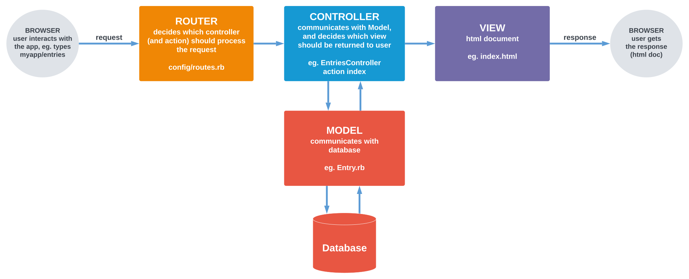

"Railddit" Clone
In this tutorial, we're going to create a simple social app, where users can post entries and score them. In the next steps, you can implement more features, like comments, user profiles with authorization, uploading images, etc.
In this tuturial we're going to use Github Codespaces. If you're working on your local machine, you still can follow this tutorial, but you'll need to slightly change some of the commands.
Creating a new app.
Go to the terminal in your Codespace and run the following command:
bin/rails new . --tailwind
If you're working on your local machine, replace dot with your application name, eg.:
bin/rails new railddit --tailwind
This command will create a new Rails app with Tailwind CSS framework. You can also use Bootstrap or Bulma,
or skip this flag completely and setup pure Rails application. See all available options by running:
bin/rails new --help.
You should now see a bunch of new files generated by this command. If everything went well, you should
be able to run your app. To do that, type in the terminal: bin/rails server.
Click on the link that will appear in the terminal, that will open you app in a new browser tab.
If you're using Codespaces, you need to do one more step. Copy the line that is displayed in the browser
tab, and put it inside config/environments/development.rb file, inside Rails.application.configure
block, so that it looks similar to the following:
require "active_support/core_ext/integer/time"
Rails.application.configure do
# Settings specified here will take precedence over those in config/application.rb.
...
config.hosts << "GENERATED_ADDRESS.preview.app.github.dev"
end
Now restart your Rails server by pressing Ctrl+C in the terminal, and running bin/rails server again.
Congratulations! You've just created your first Rails application!
Before moving further, let's take a moment to look at the files that were generated by
the bin/rails new command.
Coach: Explain generated files structure. What is the purpose of main files? Introduce attendees to MVC pattern, and briefly explain main responsibilities of each part.

Generating user entries.
One of the things that Rails provides out of the box is generators. It's a command that for introducing a new resource into our application (eg. entries, users, posts, comments, products). It generates a bunch of files necessary for representing and interacting with this resource, so that we don't have to create everything manually.
There are several types of generators. For a start, we're going to use scaffold generator, that will create the whole package for us: a model, views, routes and controller with basic actions (creating, reading, updating and destroying data, CRUD in short).
Before moving further, open another terminal tab and type: bin/rails tailwindcss:watch.
Thanks to that, Rails will generate views for us already with Tailwind CSS classes (you'll see it in action
in a few minutes). Go back to the first tab and restart Rails server. Keep both terminal tabs open
while developing your app.
We can check rails scaffold generator syntax in Rails documentation.
It looks as follows: bin/rails generate scaffol ModelName field:type.
We'll call the main resource in the app entries. We want them to have a title, content
and a tag. We won't create real users at this point (you can add this feature later), but we'll add
username field, so that users can sign their posts. So the command in our case will look as follows:
bin/rails generate scaffold Entry title:string content:text username:string tag:string